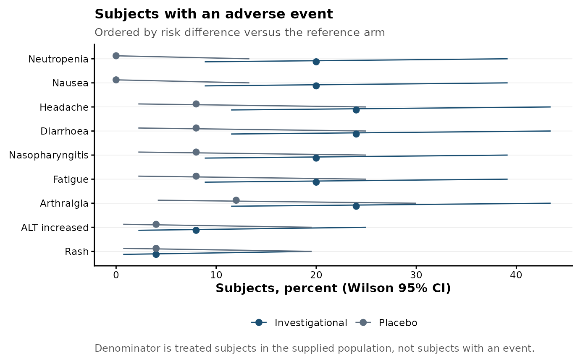

Adverse-event incidence dot plot
plot_ae.RdPercent of subjects with each term and a Wilson interval, ordered by the risk difference versus the reference arm.
Usage
plot_ae(data, term = "term", arm = "arm", denom = NULL, id = "usubjid",
reference = "Placebo", title = "Subjects with an adverse event")Examples
saf <- simulate_safety(n_per_arm = 25)
plot_ae(saf$adae, denom = saf$adsl, reference = "Placebo")
